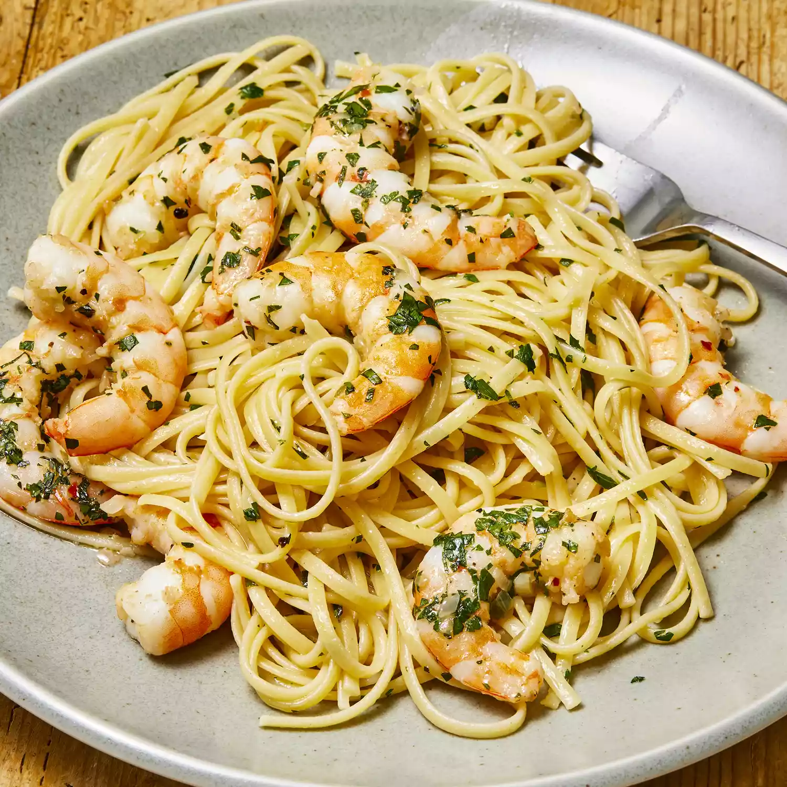

Shrimp Scampi with Pasta

Description
Shrimp scampi with pasta is the ultimate seafood pasta dish. Works with any pasta; angel hair is less filling.
Ingredients
- Shrimp
- Pasta
- Butter
- Extra-virgin olive oil
.......
Steps
- Prep ahead: Have all of your ingredients prepared and ready to cook before heating your skillet. You don't want to have to pause to cut, chop, squeeze, or measure right in the middle of a fast-moving recipe. If you use fresh shrimp, you can peel and devein the shrimp earlier in the day, then keep it chilled in the refrigerator until you're ready to get cooking.
- Cook the pasta first: Boil the pasta in well-salted water, drain, and hold aside before cooking the shrimp scampi. You'll add the pasta to the hot skillet to warm it before serving. Time your cooking so you're ready to start cooking the shrimp immediately after the pasta is drained; you don't want the pasta to sit for too long.
- Don't overcook the shrimp: It takes just a couple of minutes to cook raw shrimp, and if they cook for too long, shrimp turn tough and rubbery. You'll know the shrimp are close to done when they start to curl into a C shape and turn from translucent gray to opaque pink and white.
.......